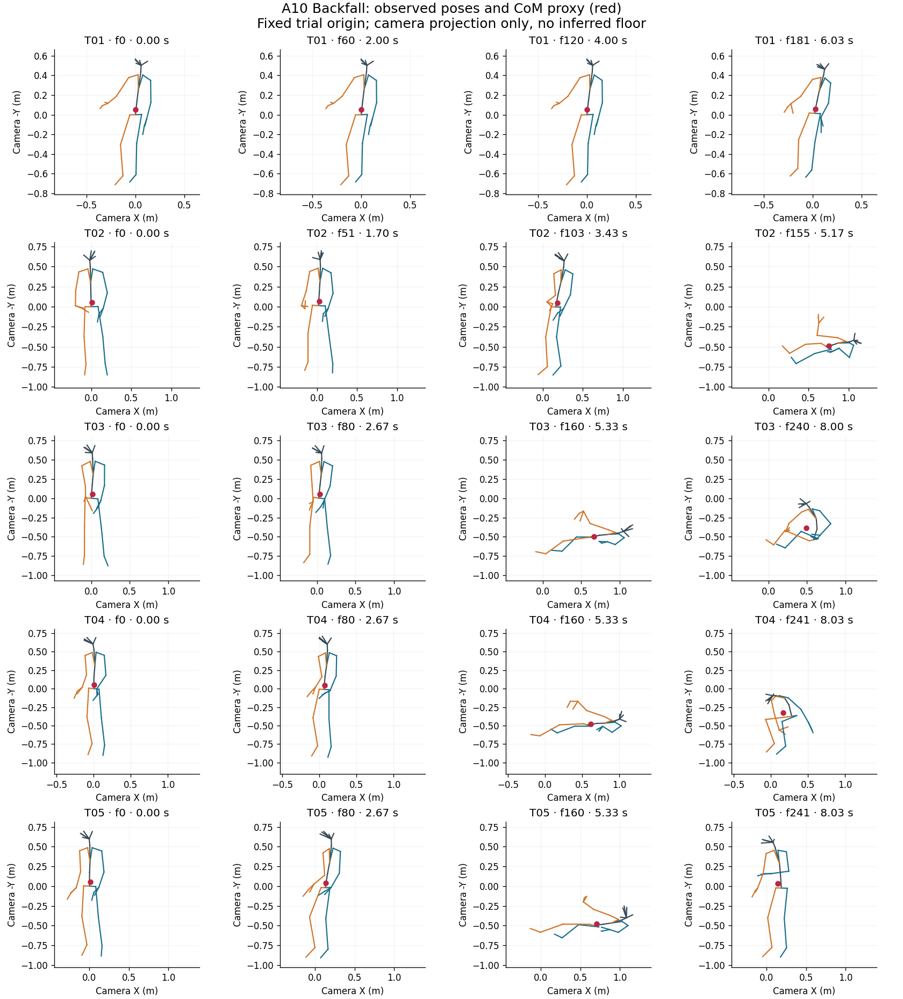
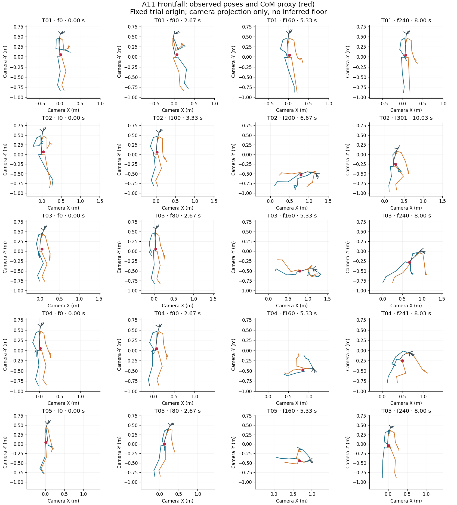
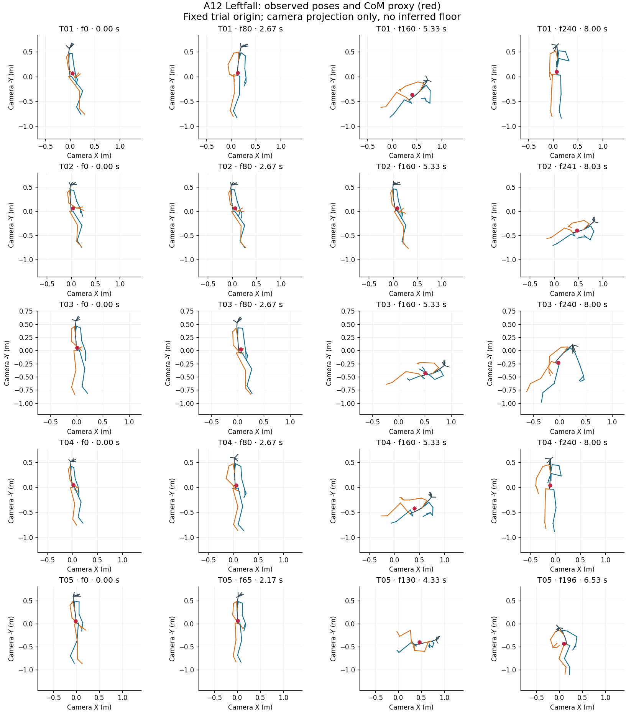
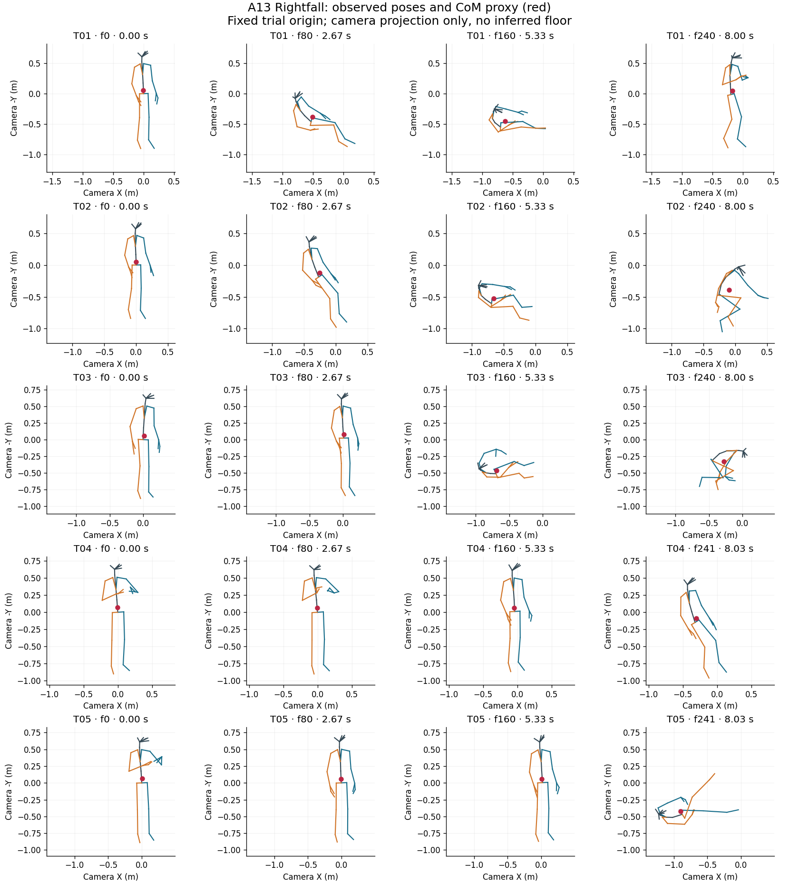
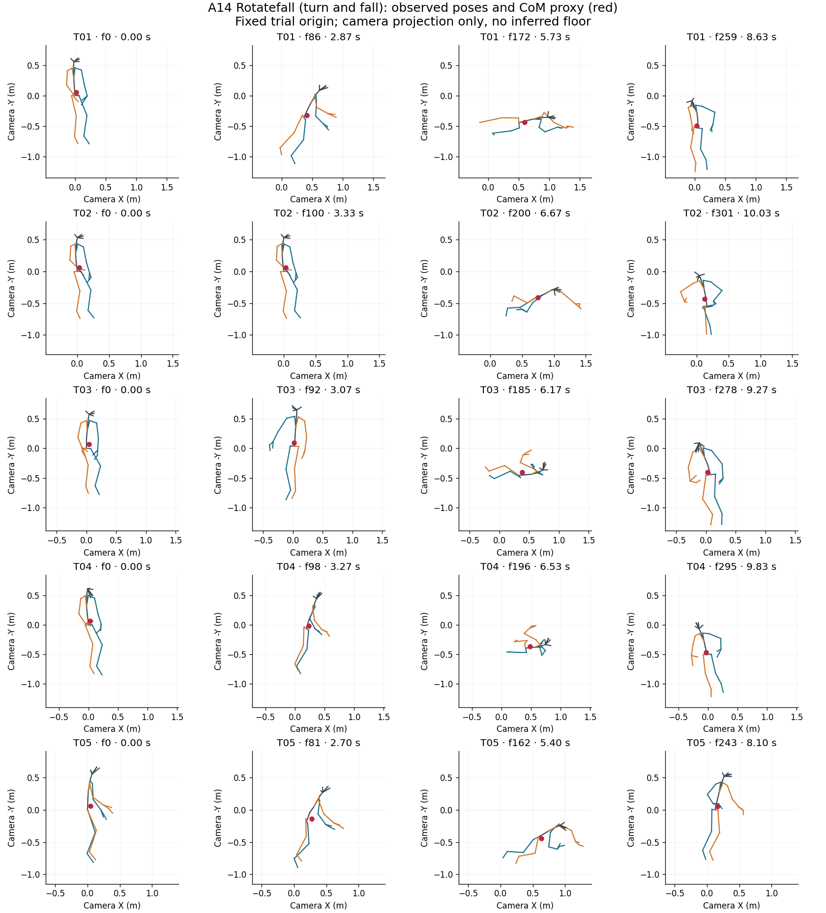
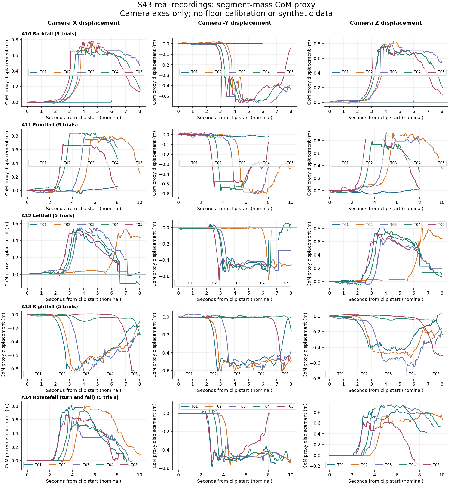
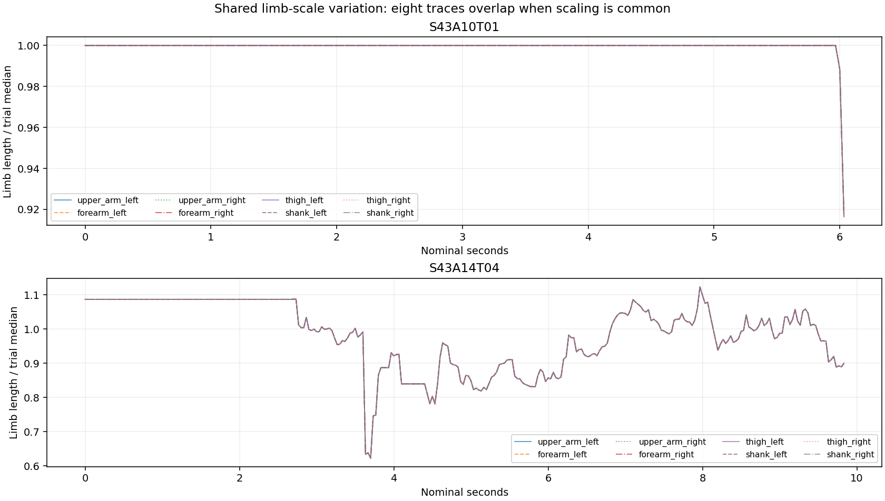
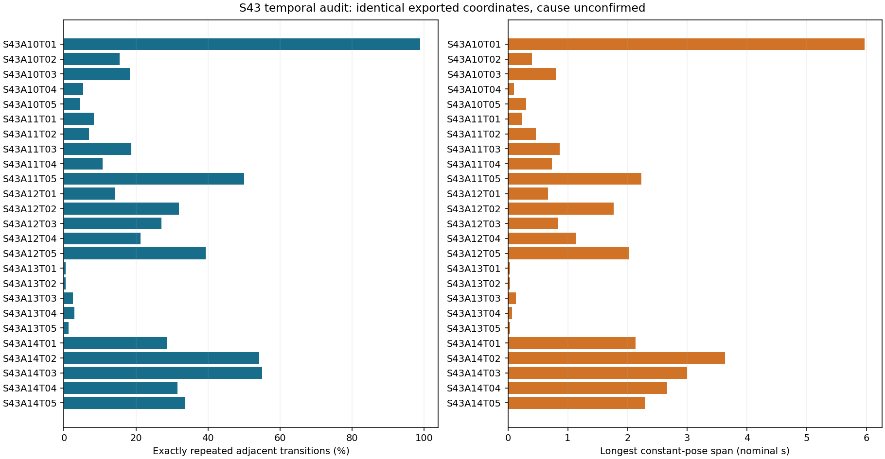
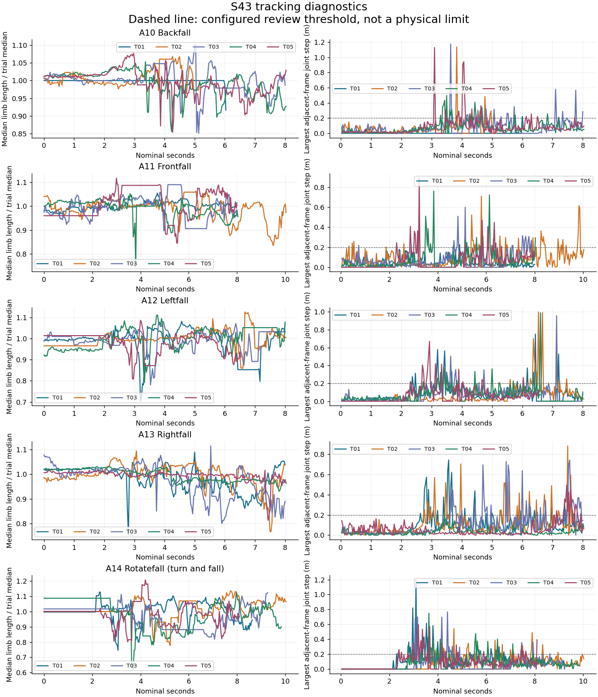

See research_notes.md for manual notes.
# S43 audit findings Clips passing numeric input checks: 25; empty: 0; missing expected: 0; invalid: 0; analyzed frames: 6080. Review-flagged destination frames: 802. Duplicate rows within clips: 1390. These are data-quality screening results, not validated fall labels or anatomical CoM. No frames are repaired or interpolated. Invalid trials remain in raw/ and manifest.json but are withheld from calculations. | Trial | Status | Frames | Span (s) | Review frames | Duplicate rows | Scale range (%) | |---|---|---:|---:|---:|---:|---:| | S43A10T01 | numeric | 182 | 6.033333333333333 | 2 | 179 | 9.11928965316713 | | S43A10T02 | numeric | 156 | 5.166666666666667 | 8 | 24 | 10.808106890008862 | | S43A10T03 | numeric | 241 | 8.0 | 29 | 44 | 29.649890925717305 | | S43A10T04 | numeric | 242 | 8.033333333333333 | 26 | 13 | 23.080431637609333 | | S43A10T05 | numeric | 242 | 8.033333333333333 | 26 | 11 | 26.234184488878178 | | S43A11T01 | numeric | 241 | 8.0 | 3 | 20 | 10.022703517017684 | | S43A11T02 | numeric | 302 | 10.033333333333333 | 48 | 21 | 27.387438568756316 | | S43A11T03 | numeric | 241 | 8.0 | 35 | 45 | 21.59390141868012 | | S43A11T04 | numeric | 242 | 8.033333333333333 | 25 | 26 | 41.36458691339031 | | S43A11T05 | numeric | 241 | 8.0 | 35 | 120 | 32.20004789309898 | | S43A12T01 | numeric | 241 | 8.0 | 29 | 34 | 53.61127699187609 | | S43A12T02 | numeric | 242 | 8.033333333333333 | 21 | 77 | 30.937118125825712 | | S43A12T03 | numeric | 241 | 8.0 | 30 | 65 | 38.293116543869154 | | S43A12T04 | numeric | 241 | 8.0 | 44 | 51 | 40.239090626854114 | | S43A12T05 | numeric | 197 | 6.533333333333333 | 31 | 77 | 34.594609935180934 | | S43A13T01 | numeric | 241 | 8.0 | 45 | 1 | 44.79185848294656 | | S43A13T02 | numeric | 241 | 8.0 | 44 | 1 | 42.63834888521642 | | S43A13T03 | numeric | 241 | 8.0 | 50 | 6 | 39.485354424899135 | | S43A13T04 | numeric | 242 | 8.033333333333333 | 1 | 7 | 10.816728161052458 | | S43A13T05 | numeric | 242 | 8.033333333333333 | 15 | 3 | 25.156961969009185 | | S43A14T01 | numeric | 260 | 8.633333333333333 | 59 | 74 | 51.162348263751255 | | S43A14T02 | numeric | 302 | 10.033333333333333 | 38 | 163 | 46.23278252987091 | | S43A14T03 | numeric | 279 | 9.266666666666667 | 45 | 153 | 37.29679048703871 | | S43A14T04 | numeric | 296 | 9.833333333333334 | 57 | 93 | 80.39580778526476 | | S43A14T05 | numeric | 244 | 8.1 | 56 | 82 | 50.7073966193047 | ## Temporal audit | Trial | Distinct poses | Repeated transitions (%) | Longest constant span (s) | |---|---:|---:|---:| | S43A10T01 | 3 | 98.90 | 5.967 | | S43A10T02 | 132 | 15.48 | 0.400 | | S43A10T03 | 197 | 18.33 | 0.800 | | S43A10T04 | 229 | 5.39 | 0.100 | | S43A10T05 | 231 | 4.56 | 0.300 | | S43A11T01 | 221 | 8.33 | 0.233 | | S43A11T02 | 281 | 6.98 | 0.467 | | S43A11T03 | 196 | 18.75 | 0.867 | | S43A11T04 | 216 | 10.79 | 0.733 | | S43A11T05 | 121 | 50.00 | 2.233 | | S43A12T01 | 207 | 14.17 | 0.667 | | S43A12T02 | 165 | 31.95 | 1.767 | | S43A12T03 | 176 | 27.08 | 0.833 | | S43A12T04 | 190 | 21.25 | 1.133 | | S43A12T05 | 120 | 39.29 | 2.033 | | S43A13T01 | 240 | 0.42 | 0.033 | | S43A13T02 | 240 | 0.42 | 0.033 | | S43A13T03 | 235 | 2.50 | 0.133 | | S43A13T04 | 235 | 2.90 | 0.067 | | S43A13T05 | 239 | 1.24 | 0.033 | | S43A14T01 | 186 | 28.57 | 2.133 | | S43A14T02 | 139 | 54.15 | 3.633 | | S43A14T03 | 126 | 55.04 | 3.000 | | S43A14T04 | 203 | 31.53 | 2.667 | | S43A14T05 | 162 | 33.74 | 2.300 | Exact repeats mean identical exported coordinates, not confirmed biological stillness. See results/constant_pose_runs.csv for inclusive zero-based frame ranges. No repeats are deleted. ## Evidence and reproducibility - results/manifest.json: source paths, hashes and parsing errors. - results/trial_summary.csv: clip-level measurements. - results/review_events.csv (when flags exist): exact frame pairs for inspection. - results/com/: per-frame CoM and camera displacements. - results/segment_mass_model.csv and segment_model.json: full mass and landmark mapping. - results/landmark_sensitivity.csv: alternative mappings, not uncertainty bounds. - config.json and code/: frozen configuration and scripts. ## Questions for the team Confirm XYZ units/order, camera-to-floor orientation, original timestamps, missing/trimmed recordings and body-tracking confidence. Determine whether changing limb scale is in the raw export or preprocessing. Review full event coverage before selecting PINN trials. No ground contact, BoS, joint forces or external perturbations are inferred here.
# S43 research review — 2026-09-26 ## Decision S43 improves archive completeness and observed recording length over S50. Use it for visual inspection and pipeline development. Defer physical parameter identification, derivative-based fitting and perturbation-driven synthesis until repeated coordinates and shared scale changes are explained. File completeness is not a training-readiness test. ## Subject and model Female; 130 lb = 58.9670081 kg; 5 ft 4 in = 1.6256 m. Female anthropometric source fractions are normalized from their rounded total 0.9999. HEAD/HAND and ANKLE/FOOT mappings remain approximations. Age was not provided: confirm adult-model applicability. Nominal 30 FPS and fall labels are inherited from the described study protocol; timestamps, confidence, floor calibration, contact and force measurements are unavailable. ## Main observations - All 25 expected files (five trials each A10–A14) are present, nonempty, parse as 96 finite XYZ columns, and pass input checks. There are 6,080 frames and no NaN/Inf values. - First-to-last clip spans are 5.167–10.033 nominal seconds. Zero exact shared frames were found between different trials. - There are 1,390 duplicate rows beyond the first occurrence of each pose (22.86% of 6,080 rows). All 1,390 are also consecutive repeat transitions (22.96% of 6,055 adjacent-frame transitions). Do not interpret this as a measured dropped-frame rate. - S43A10T01 has 182 rows but only three distinct poses. Frames 0–179 are identical: 180 rows spanning 5.967 nominal seconds. This clip should be withheld from initial fall-dynamics fitting pending correction or confirmation of the original recording. - All 25 trials have review flags: 802 destination frames exceed a configured joint-step or scale-change threshold (13.25% of adjacent transitions). Threshold flags are screening signals, not automatic error labels. No flagged frames were removed. - Common limb-scale range is 9.119–80.396%. The minimum pairwise correlation among the eight limb-length time series across all trials is 0.99999999949. Maximum within-frame spread among their normalized lengths stays below 2.6e-6. This is consistent with common multiplicative scaling; it does not identify its source or prove that each coordinate is wrong. Request the export/preprocessing code. - S43A14T04 has the largest common-scale range (80.396%). S43A14T01 has the largest adjacent-frame joint step (1.19694 m). Both merit frame-by-frame review. - All 25 initial head-to-mid-ankle directions are within 60 degrees of camera negative Y. This differs from S50 (18/19 beyond 60 degrees) and is consistent with better initial upright coverage under the camera-axis assumption. It is not a calibrated body inclination or proof that every clip contains a complete fall. - Inspected A10 snapshots show upright-to-lowered/horizontal sequences in T02–T05, while T01 is nearly constant. Several clips return toward upright by their final snapshots; this alone does not establish a controlled recovery trial or validate the event labels. ## Evidence locations - results/manifest.json and trial_summary.csv: completeness, hashes, per-trial measurements. - results/temporal_summary.csv and constant_pose_runs.csv: exact repeated intervals. - results/review_events.csv: frame pairs and thresholds for manual review. - results/plots/temporal_repeats.png and shared_limb_scaling.png: repeat and scale evidence. - results/plots/A10_skeleton_snapshots.png: visual examples above. - results/plots/real_CoM_comparison.png: camera-axis displacement of female segment CoM proxy, not floor-referenced height. ## Comparison with S50 | Measure | S50 | S43 | |---|---:|---:| | Numeric clips / expected | 19/25 | 25/25 | | Empty files | 6 | 0 | | Frames | 895 | 6,080 | | Clip span, nominal seconds | 0.333–3.033 | 5.167–10.033 | | Duplicate rows within clips | 6 | 1,390 | | Flagged destination frames | 136 | 802 | | Within-trial common-scale range | 2.35–39.97% | 9.12–80.40% | The larger flag count partly reflects many more frames. Counts alone should not rank tracking quality across subjects. ## Questions and next actions for the team 1. Inspect the original S43A10T01 recording and export: why are the first 180 skeleton rows identical? 2. Were skeletons retargeted, normalized, resized or transformed per frame? Can we obtain original SDK positions, timestamps and body-tracking confidence? 3. Confirm XYZ units/order, original sampling cadence and any trimming/padding. Repeated exported coordinates should not be silently deleted and retimed. 4. Confirm subject age/adult-model applicability and camera-to-floor calibration for vertical and horizontal CoM analysis. 5. Annotate fall onset, descent, contact and post-event motion from synchronized video or full skeleton playback. Inspect all frame-level flags in candidate windows before choosing a fall family. 6. After resolving export quality, select complete trials, preserve trial-level evaluation splits, and begin reconstruction before attempting inferred forces or hypothetical perturbations. No synthetic falls, forces, BoS, PINN training or clinical conclusions were produced in this audit.








